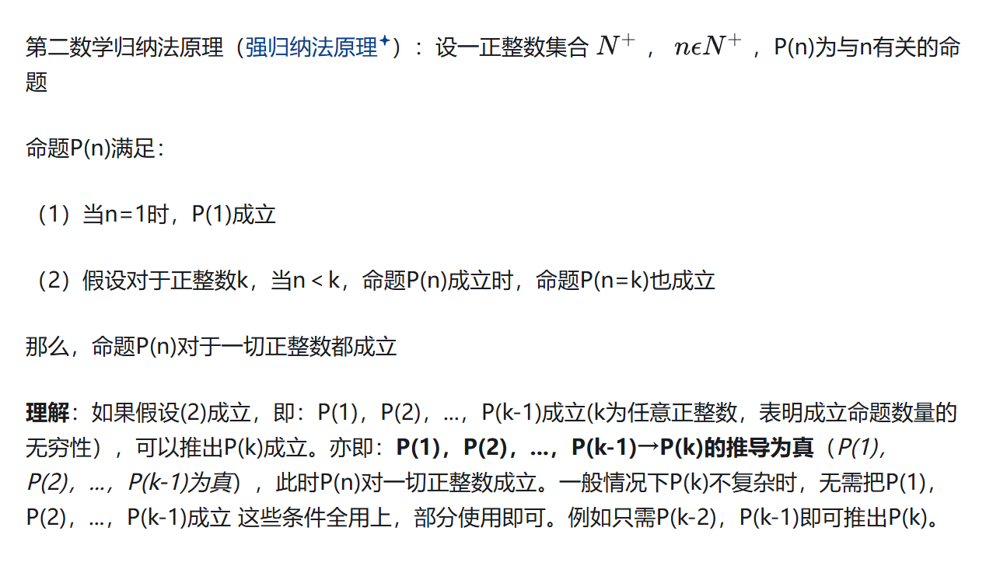

离散数学-自然数和基数
本文最后更新于 2024年11月30日 下午
自然数和基数
后继集合:对于任意集合A,其后继集合\(A^+\)定义为:\(A^+=A\cup\{A\}\)
\(i)\emptyset^+=\{\emptyset\}\)
\(ii)\{\emptyset\}^+=\{\emptyset,\{\emptyset\}\}\)
\(iii)A\in A^+\)
\(iv)A\subseteq A^+\)
\(v)A^+\neq \emptyset\)
自然数系统
冯诺依曼方案
\[ \begin{aligned} &0=\emptyset\\ &1=0^+=\{\emptyset\}=\{0\}\\ &2=1^+=\{\emptyset,\{\emptyset\}\}=\{0,1\}\\ &...\\ &n+1=n^+=...=\{0,1,...,n\} \end{aligned} \]
自然数集合(归纳定义法)
\[ \begin{aligned} &i)0\in N,0=\emptyset\\ &ii)n\in N,n^+\in N\\ &iii)S\subseteq N满足\\ &\ 1)0\in S\\ &\ 2)如果n\in S,则n^+\in S\\ &\ 则S=N \end{aligned} \]
大小/小于
对每个自然数\(n\in N\),皆有\(n\in n^+\)及\(n\subseteq n^+\)
若\(m,n\in N\)使得\(m\in n\),则称m小于n,记为\(m<n\)
定理
\(proof:\forall n\in N:\bigcup n^+=n\) \[ \begin{aligned} &S=\{n|n\in N且\bigcup n^+=n\}\\ &1)0\in S:0\in N且\bigcup\{\emptyset\}=\emptyset=0\\ &2)若n\in S,则\bigcup n^+=n且n\in N\\ &\therefore n^+\in N,\bigcup((n^+)^+)=\bigcup(n^+\cup\{n^+\})\\ &=(\bigcup n^+)\cup(\bigcup\{n^+\})=n\cup n^+=n^+\\ &\therefore n^+\in S \end{aligned} \]
皮亚诺公理
\[ \begin{aligned} &1)0\in N\\ &2)n\in N,则有唯一的后继n^+\in N\\ &3)n\in N,则n^+\neq 0\\ &4)n,m\in N且n^+=m^+,则n=m\\ &5)若S\subseteq N满足i)0\in S,ii)如果n\in S,则n^+\in S\\ &则S=n \end{aligned} \]
第一数学归纳法
P(n)是自然数集合上的性质(或谓词),如果能证明
1)\(P(0)\)是真
2)对任何\(n\in N\),\(P(n)\Rightarrow P(n^+)\)
则对所有\(n\in N\),P(n)为真
即:
\(P(0)\wedge (\forall n)(P(n)\rightarrow P(n+1))\Rightarrow (\forall n)P(n)\) \[ \begin{aligned} &S=\{n|n\in N,P(n_0+n)为真\}\\ &0\in S:0\in N且P(n_0+0)为真\\ &若n\in S,则n\in N且P(n+n_0)为真\\ &因为:n_0+n^+=(n_0+n)^+\\ &因此:P(n^++n_0)为真,n^+\in S \end{aligned} \]
第二数学归纳法(强归纳定理)
\(\forall n\in N,令\overline{N_n}=N-N_n=\{n,n+1,n+2,...\}\)
\((\forall n)((\forall k)(k<n\rightarrow P(k))\rightarrow P(n))\Rightarrow (\forall x)P(x)\) \[ \begin{aligned} &Q(n):若k\in N且n_0\leq k\leq n,则P(k)为真\\ &Q(n)满足第一归纳法\\ &显然Q(n_0)即为真,所以Q(n_0)为真\\ &假设对任意n\in\overline{ N_{n_0} },Q(n)为真\\ &若k\in N且n_0\leq k\leq n,则P(k)为真\\ &因此,当k\in N且n_0< n^+时,P(k)也皆为真\\ &P(n^+)为真,表明Q(n^+)为真\\ &根据第一归纳法,对任意n\in \overline{ N_{n_0} },P(n)为真 \end{aligned} \] 
基数
等势
从A到B的双射,则称A和B相等/等势,记为\(A\sim B\)
无穷集合可以与它本身的真子集等势
鸽笼原理
任何有限集都不能与它的真子集对等
任何与自身真子集等势的集合均是无穷集合
集合的基数
\(设n\in N,A\sim n,则\#(A)=n\)
无限集的基数:\(\#(N)=\aleph_0\)
任意两个基数都可以比较大小
无穷集的等价条件
- A为无穷集
- A有可数无穷子集
- A有与它对等的真子集
定理
任何无穷集合必含有可数无穷子集
实数集合R是不可数的
对每个集合A,皆有\(\#(A)<\#(\rho(A))\)
例
\(\#(R\times R)=\aleph\)
取52个整数,必有两数之和或两数之差,被100整除
\[ \begin{aligned} &在51个抽屉:\{0\},\{1,99\},\{2,98\},\dots\{49,1\},\{50\}中选取52个整数\\ &必有两个整数r_a\mod 100,r_b\mod 100正好落在同一抽屉中\\ &a)r_a=r_b,则(r_a-r_b)|\ 100\\ &b)r_a\neq r_b,则(r_a+r_b)|\ 100 \end{aligned} \]